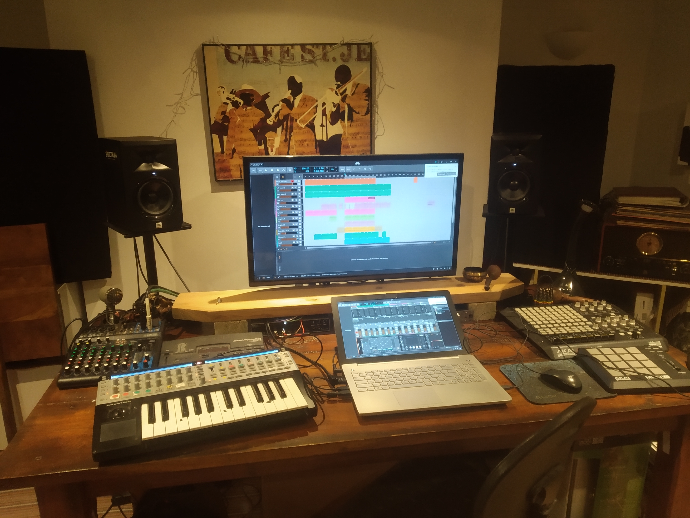
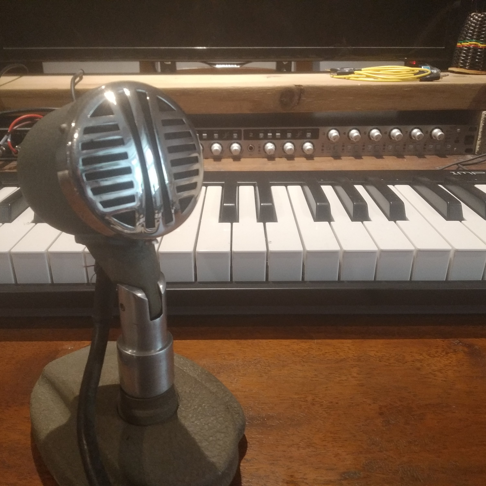

Welcome to the home of Bridge Echo! We are a a small music studio in the UK that provide a range of audio services from recording and tracking to beat programmming and more. We specialise in the arrangement of string sections and recording of string parts, however we also work with many types of music production duties. Using a collection of analogue and digital equipment, we have many years experience working across different genres and in different mediums. Most of our work is done remotely - we send out all finished files in a high quality lossless format or anything of your choosing.

We have worked with many clients around the world, from solo artists to record labels, for short films and bollywood film trailers and have and even provided music for cruise holiday companies to use in their onboard entertainment. Have a listen to some of the projects we have worked on here.

With many years of experience in playing, production and sound engineering, we work with a small roster of classically trained professional musicians alongside our in-house violinist. From string players to saxophonists, we can write, arrange and record lines for your song, film or production. If you want the sound of real string quartet, no problem! We have worked on a finely-honed method of multi-tracking to achieve the sound without the costs of hiring four musicians. Check out in more detail what we do here.